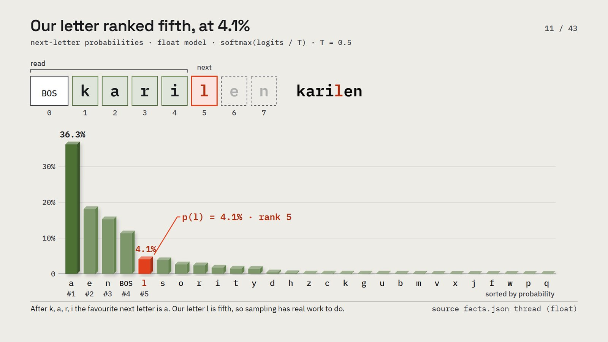
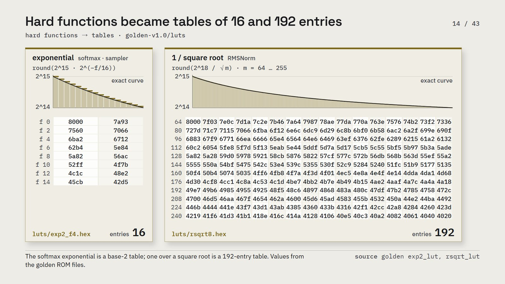
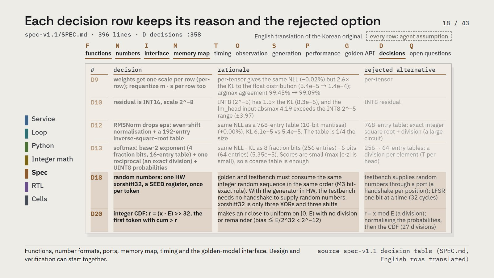
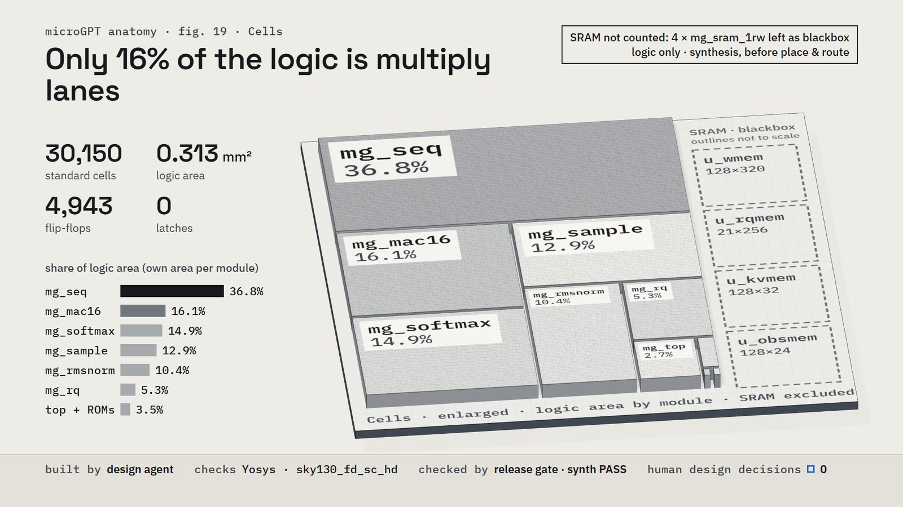
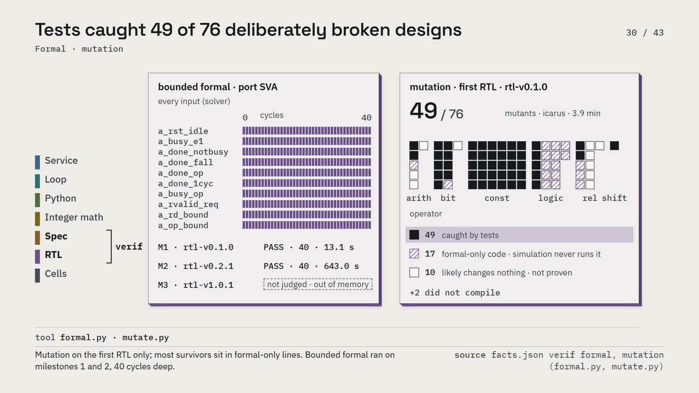
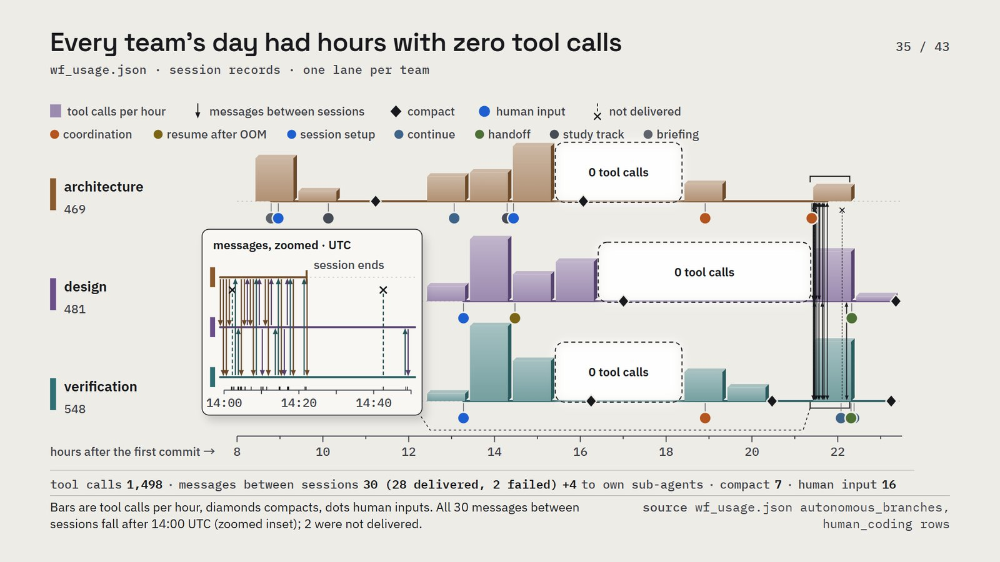
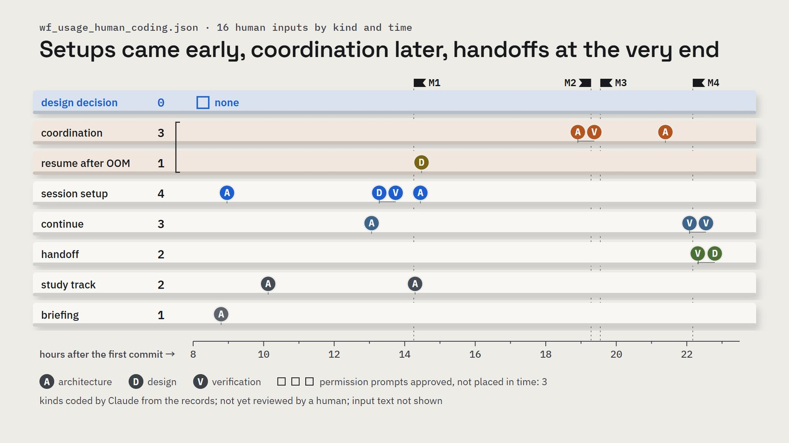
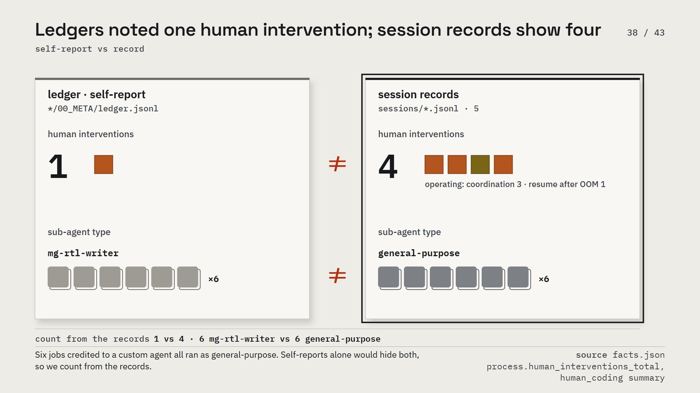

microGPT anatomy — explainer
Three AI agent teams turned a Python GPT into bit-exact RTL in under twenty hours, and one token can be traced through every layer
Every word an AI chat streams back is chosen one token at a time. This article follows one such token, the letter l in the generated name karilen, backwards from a chat window down to standard cells: through the generation loop, about 200 lines of Python, an integer model, a written spec, SystemVerilog, synthesis and verification. The hardware was specified, designed and verified by three teams of AI agents, architecture, design and verification, with one human, and the RTL matched the integer golden model, also written in Python, bit for bit 19.55 hours after the first commit. The second half reads the session records to show how it was built, and where the teams' own logs disagree with them. Two limits come first. This is simulation and synthesis only; nothing was taped out. And it is one run of one project (n = 1), so everything about the process is an observation, not a measured effect.

Following one token downward makes every layer answer to the same data
Every layer here has a real artifact behind it: a Python file, a quantized weight table, a spec with a decision table, 2,395 lines of SystemVerilog, a synthesis report, and verification reports from two simulators. One thread runs through all of them, the same token at the same position, written in each layer's language: a probability in Python, an integer logit in the integer model, a 16-bit field in a memory word in RTL.
The model is small, but its loop is the one every service runs
Behind almost every LLM service is one loop: turn text into tokens, run a forward pass, get a probability for every possible next token, pick one, append it, and go again. That loop is the same at hundreds of billions of parameters and at 4,192, the size of the model here. It has 1 layer, 16 channels, 4 attention heads and a vocabulary of 27 tokens: 26 letters and one mark that starts and ends a name. Its training ran 1,000 steps of one name each, out of a list of 32,033 names, and it now dreams up new ones.
The loop never recomputes the past. Each position leaves a key and a value in a cache, and later positions only read them. Every new token still has to read all the weights and that growing cache, which is why generation is mostly a memory problem.
The whole reference model is about 200 lines of plain Python
Andrej Karpathy's microgpt is the whole GPT, training included, in about 200 lines of Python with no libraries. One position of the forward pass is a handful of those lines: embed the token and its position, normalize, project to queries, keys and values, attend, run a small MLP, and score all 27 tokens. That costs 3,504 + 32(p+1) multiplications at position p, so between 3,536 and 4,016 per position.

The thread starts at the fifth letter of karilen, position 4, where the model has read k, a, r, i. The favorite next letter is a, at 36%; the letter that was actually chosen, l, ranks fifth at 4.1% (sampling temperature 0.5). So sampling has real work to do: hardware that only picked the top token would not reproduce this name.
Turning every number into an integer cost almost nothing in accuracy
Floating point is expensive in silicon, so the architecture team turned every number into an integer, and wrote down each choice with its reason and the option it rejected. Weights became 8-bit with one scale per row; a single scale per tensor gave the same loss but 2.6 times the divergence from the float model. The residual stream became 16-bit, because the input to the output layer reaches 4.19 in calibration and an 8-bit residual at that scale stops at ±3.97.
The hard functions became small tables. The exponential in softmax is a 16-entry base-two table, and one over a square root is a 192-entry table; a 768-entry table gave the same loss at four times the size. Softmax keeps one exact division, a single reciprocal instead of a division per element.

Even the dice became integers. A 32-bit xorshift generator and an integer running sum pick the next token, with no division in the sampler. For our letter, the running sum over all 27 tokens ends at 91,293, the draw is r = 52,122, and that falls inside l's slice from 51,653 to 55,409. Because the design and the golden model use the same random numbers in the same order, their generated names can match exactly.
What did this cost? On 2,000 held-out names that training never saw, the loss moved by 0.0019%, against a budget of 3.0%, and the integer model picked the same top token as the float model 99.54% of the time. Our letter is now the integer logit 41, still fifth, still about 4%.
One spec let design and verification start at the same time
Every one of those choices is written down in one document, the spec: functions, number formats, ports, memory map, timing, observation points, sampling rules, a performance target, the golden-model interface and the decision table. Design builds the RTL from it and verification builds its expected values from it, so the two teams can start together without waiting for each other.

The architecture team shipped 12 releases, 7 of the spec and 5 of the Python golden model, release candidates included. When something was unclear, a team filed a question as a file; 9 such files were written, and the three that concerned the spec each became a new version.
The design team wrote 2,395 lines of SystemVerilog that beat the cycle target
The design team wrote 2,395 lines of SystemVerilog in 11 files: a bus wrapper, the top, a sequencer, and the blocks it drives, which are the multiply lanes, RMS norm, softmax, the sampler, a requantizer, two lookup tables and memory. The sequencer is the largest file at 726 lines; it walks one position step by step and feeds the multiply lanes.
Four, eight or sixteen lanes trade cycles for area. The spec's target was 2,000 cycles per position at 100 MHz; across 44 names, the averages were 1,398.4 cycles with 4 lanes, 960.4 with 8, and 741.4 with 16. The 16-lane design is the default.
Our letter's score lands in an observation memory word: 41 is 0x0029 in the upper 16 bits of the word at address 0x0855. That value comes from the golden model's packing function, not from a captured RTL waveform.
Synthesis gives about thirty thousand cells, and only 16% of the logic is multiply lanes
Synthesized with Yosys to the open sky130 standard-cell library, the logic becomes 30,150 cells and 0.313 mm² before layout. That figure excludes the four memories, which were left as black boxes, so it is not the area of a finished block.

The biggest share is the sequencer's own control and buffer logic at 36.8%; the multiply lanes are 16.1%, softmax 14.9%, the sampler 12.9%, normalization 10.4% and the requantizer 5.3%. These shares, too, leave the memories out.
Verification built its answers from the spec, and its catches came before the RTL
The verification team never looked inside the RTL to decide what the right answer was. Every expected value came from the spec and the golden model; it did read the port table and the file list, and mutation testing ran on a copy of the RTL. A script checks that no verification code points into the design folder; it found 0 hits.
At the third milestone, two different simulators, Verilator and Icarus, ran the same 17 tests: 52,467 reads each, 0 mismatches, and all 65 coverage bins hit.
So what did verification catch? Its milestone checks found no RTL bugs. The catches came earlier. Reading a draft spec, verification found a corner case no test vector covered: a name whose end mark lands on the very last position, where the two stop rules meet. And the design team's own gate caught a one-bit constant, 1'sd1, that meant minus one instead of one.

Bounded formal checks proved the port rules against every possible input, 40 cycles deep, on the first two milestones only; on the third the run ran out of memory and was not judged. Mutation testing broke the first RTL on purpose: of 78 mutants, 2 did not compile, and the tests caught 49 of the remaining 76. Of the 27 survivors, 17 sat in formal-only lines that simulation never runs and 10 were candidates for changing nothing at all. Counting that is how you learn what a passing test is worth.
Back at the top the names match bit for bit, and at real scale moving data is the limit
The RTL, in simulation, generated a list of names from seed 42; the golden model generated the same 20 names, karilen fourth among them. At the third milestone, 44 golden names were part of a regression with 0 mismatches on both simulators.
At real scale, when a model writes one token at a time, the multiplications are rarely the bottleneck. Counting from public model definitions, each byte of weights and key-value cache moved for a token feeds about one multiply-add, so with 8-bit weights and cache a decode step does about 2 operations per byte whatever the model size. An example machine with 100 TOPS and 1 TB/s needs 100 operations per byte to keep its multipliers busy. These are computed from definitions, not measured, and the example machine is not a product. Much of a real AI accelerator is built around that gap.
How it was built: the second layer, read from the session records
Every number in this layer was counted by a script from the session records
The second layer asks what the workflow system (WF) and the human actually did during the run. The data are the Claude Code records of the three teams, 5 sessions in all, with their sub-agent records, ledgers, question files and git history. A script, extract_wf_usage.py, reads the records line by line and counts, storing each source file's size and hash. A human input is a record the human typed into that session, not a message from another session, a notification or a compact summary; a permission approval is a tool call the human allowed in a confirmation prompt. The snapshot ends at 2026-11-01T23:11:03Z; the three team sessions are closed, so re-extraction gives the same numbers. One step is not mechanical: Claude sorted the 16 human inputs into categories, reading each once, and that coding is pending review by the author. The text of those inputs is not quoted or published; only categories and times are.
Three agent teams and one human made 65 commits in 22.17 hours
The cast was one human and three teams of Claude Code sessions, five sessions in all, with a root session for integration. From a first commit holding a plan, a contract between the teams and seed instructions, the project reached the fourth milestone's top-level tests passing in 65 commits and 22.17 hours. Those are wall-clock hours; the three sessions overlapped, and their active time added up to 11.1 hours.
The timeline shows long quiet hours, and every message between sessions came after the human's coordination order
Laid out as one lane per team, the day has 1,498 tool calls: 469 by architecture, 481 by design and 548 by verification. Sub-agents made another 478 inside their own runs, and the sessions were compacted 7 times.

Two lanes go quiet: design made no tool calls from 09:00 to 13:00 UTC, and verification none from 08:00 to 10:00 UTC. Design was waiting for an answer from architecture, architecture for a review, and verification for the human's go-ahead, while some of those answers already existed. Part of the gap overlaps with waiting after memory ran out, and the records cannot separate the two. The sessions could message each other: 34 messages were sent, 30 between team sessions and 4 from design to its own sub-agents. All 30 fall between 14:01 and 14:49 UTC, after the human's instruction at 14:00, and 2 were not delivered.
None of the human's 16 inputs was a design decision
Across the three team sessions the human typed 16 inputs and approved 3 permission prompts. By category: 4 session setups, 3 "continue", 3 coordination relays, 1 permission to resume after memory ran out, 2 handoff requests, 2 about the human's own study track, 1 briefing request, and 0 design decisions.

Four were operating interventions: three to relay messages or break a wait, one to allow a rerun after memory ran out. Twice an agent stopped after a memory failure and asked whether to resume. Design waited 11 minutes for the answer; verification, stopped by the same memory limit, waited 215 minutes, over three and a half hours. The autonomy rules had no default action for a resource failure.
The teams' ledgers recorded one human intervention; the session records show four
Each team kept a ledger, 62 lines in all, with a field for human interventions. The ledgers note 1 intervention: the instruction to stop the sessions waiting on each other and put the architecture team in charge. The session records show 4: the ledgers left out the two messages the human relayed at 11:31 UTC and the go-ahead to resume after memory ran out. Both sources agree on 0 design decisions.

Delegation shows the same gap. The design ledger credits 6 block-writing jobs to a custom agent defined in the project; in the execution records all 6 ran as general-purpose agents told to read that definition file. Self-reports alone would hide both differences, so this layer counts from the records.
Twenty-five sub-agents ran, and thirteen were independent reviews
The three teams launched 25 sub-agents: 13 wf-second-look reviews of work they had not made, 8 general-purpose agents, 2 wf-project-scout, 1 wf-researcher and 1 wf-wrap-refiner. Of WF's global skills, project init ran 3 times, once per team; review page and wrap-up ran once each; four others were not used. All 6 narrowly scoped blocks handed to sub-agents passed the team's gate without the human, though their contracts were topped up by messages during the run.
The scripts the teams ran most were harness scripts that each team built for itself at the start, such as release.py, run_wsl.py, build_hub.py, regress.py and gate.py. They are not a majority, though: in the three team sessions, about two in five shell commands, 337 of 814, executed one of the project's own Python scripts. The output came to about 1.44 million tokens, and nearly all input was cache reuse, about 339 million tokens read from cache.
Three observations from a single run
First, independent reviews found the most in the spec. Every spec readiness review raised findings, and the errors came when the reviewer re-implemented parts from the spec text and compared them with the golden model; the four reviews of RTL releases, made after the machine gates had passed, found 0 errors. Second, when spec drafts went out for review, the questions came from verification, 2 of 2, while design answered "no questions" both times. Third, what the human did was coordinate the sessions and restart work after memory ran out, not make design decisions.
One run and one model family give observations, not effects
The sample is one project and one autonomous run. The independent reviewer is the same model family as the agents it reviews, so it shares their biases even without their context. Claude also did the analysis and the coding of human inputs, and the coding needs the author's review before it can carry a claim. Some classes, such as harness failures and shell command types, come from regular expressions and show tendencies only. No claim here says the workflow saved time or improved quality.
What can be rebuilt, and what comes next
In the project repository, which is private for now, 00_META/seminar/tools/extract_facts.py writes 00_META/seminar/data/facts.json, the result-layer numbers, each with its source. 00_META/seminar/tools/extract_wf_usage.py writes 00_META/seminar/data/wf_usage.json and the generated tables wf_usage_tables.md beside it; the human-input coding is wf_usage_human_coding.json, which holds each input's time, category and a one-line paraphrase. These data files are not published with this article: the coding paraphrases the human's words and the counts list local file paths. A release with only times, categories and counts is left for a later write-up of the process data. The real-scale arithmetic comes from scenes/video/build_backup.py in the video build. Raw session records and the human's input text are not part of any package.
Next, the same project will be run again with a human making the design decisions, so the difference between the two runs shows what a human adds. The workflow system itself is explained in a separate video, https://youtu.be/e6XbvrdJfWc.